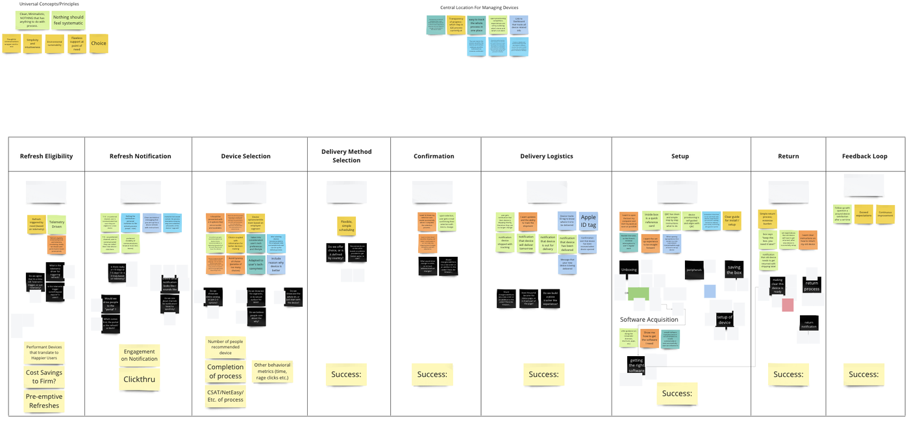
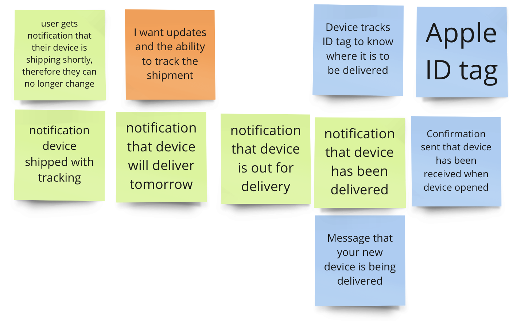
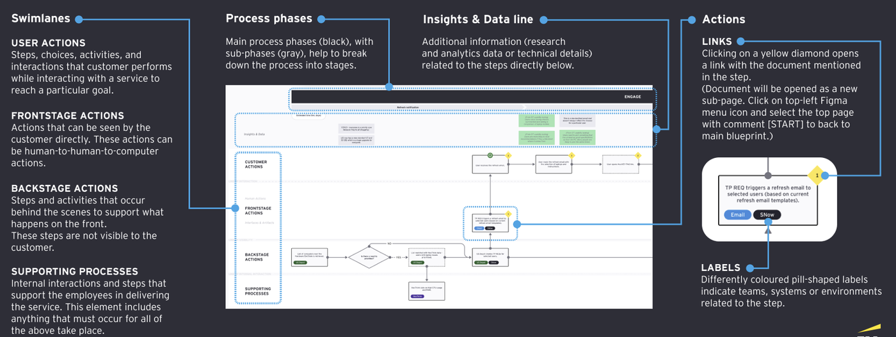
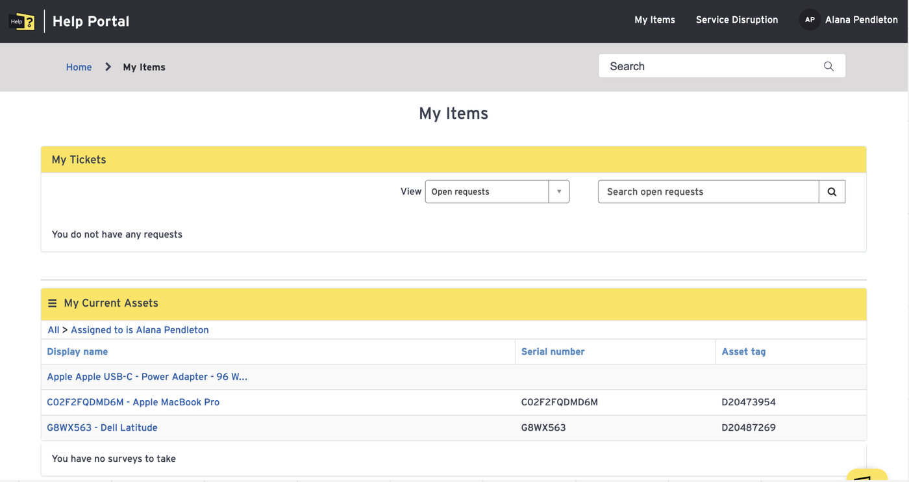

A three-pillar strategy to reduce friction across device refresh, support, and employee touchpoints for 400,000+ global EY employees.
Since COVID-19, hybrid working became the dominant model at EY — employees spending 49% of their time remotely in FY24, up from 10% in FY19. As virtual work became central, the tools enabling that work became critical to employee experience and productivity.
The proliferation of localized device lifecycle customization created inefficiencies, inflated costs, and inconsistent experiences across global member firms.
Elevate device acquisition to meet consumer-grade expectations — a curated, guided end-to-end experience that strengthens EY's employer brand and retains top talent.
Tailor device offerings based on role-driven performance needs — matching the right laptop to the right employee using telemetry and application-level analysis across 191 specialist apps.
Proactively address poor-performing devices before users are impacted — improving NPS and productivity while extending asset lifecycles when performance data supports it.
Seamless workflow is achieved when technology is purpose-fit, frictionless, and unobtrusive. The Device Needs strategy is built around this principle: right tools, right people, right time.
The strategy emerged through four connected phases of work — each building on the last. What follows is the project journey: the research that revealed the problem, the workshop that defined the north star, the strategy that charted the path, and the analysis that prioritized the work.
We began with a comprehensive service blueprint of the shipped device refresh journey — mapping every touchpoint, interaction, and backstage process across the Engage, Provision, and Setup phases. This wasn't a hypothetical model. It was built from actual stakeholder interviews, real system screenshots, and 2022 US Depot process documentation.
The blueprint became the foundation for everything that followed. Overlaying research data directly onto each journey moment made the pain visible in a way that stakeholders across IT, operations, and leadership could engage with — not just UX. We documented issues like generic refresh emails that didn't reflect actual device availability, device selection forms missing technical specifications, and a setup experience with no role-based guidance.

Workshop journey map — Refresh Eligibility through Feedback Loop, with research insights and success metrics at each phase
Key finding: The experience was fragmented at every seam. Notification, selection, delivery, setup, and return were treated as separate operational problems — not as a single continuous employee experience. No one owned the end-to-end.
With the current state documented, we hosted a series of vision workshops with cross-functional stakeholders to establish a shared north star for the device refresh experience. The goal wasn't to design solutions — it was to align on what "great" looked like before anyone started building.
We broke the journey into 11 key moments — Refresh Eligibility, Notification, Device Selection, Delivery Method Selection, Confirmation, Shipping and Delivery, Unboxing, Device Setup, Software Acquisition, Return, and Feedback Loop — and worked through each one collaboratively. For each moment, we captured what users should feel, what success looks like, and what the key design principles should be.

Workshop output — delivery logistics north star: sequential notifications, shipment tracking, and confirmation that device has been received
The workshops surfaced clear patterns. Employees wanted to be treated like consumers — choice, transparency, and personalization at every step. They wanted notifications that inspired confidence, not anxiety. Device selection that offered guidance, not a dropdown of model numbers. A setup experience that felt self-directed and fast, not confusing and slow.
The workshops produced something more valuable than a list of features: a shared language. When stakeholders left the room, they understood what "consumer grade" meant for this specific program — and why it mattered for talent retention and the EY employer brand.
The target state deck translated the north star into a strategic roadmap organized around the three pillars. It wasn't a solution spec — it was a directional framework that showed how the three pillars would work together to transform the experience across every phase of the journey.

The shipped device refresh journey segmented into three key phases: Engage (device selection), Provision (shipping and logistics), and Setup (unboxing through return)
Consumer Grade Experience Layer — Eight design recommendations spanning the full journey. Notifications sequenced for user readiness and personalized where possible. Device selection guided by segmentation data rather than open menus. Setup experience self-directed with role-based onboarding. Each recommendation mapped to the specific journey moment it addressed, with success outcomes defined.
Segmentation Model — Device offerings tailored to role-driven performance needs rather than a one-size-fits-all catalog. Matching the right device to the right employee using telemetry and application-level analysis across 191 specialist applications. This was the mechanism that made consumer grade experience possible at EY scale.
Telemetry-Driven Refresh — Moving from temporal refresh cycles to performance-triggered replacement. Poor-performing devices addressed before users were impacted, improving NPS and extending asset lifecycles where data supported it. This pillar connected IT operations efficiency directly to employee experience quality.
The target state gave EY technology leadership something they hadn't had before: a holistic picture of what the device experience could become — and a framework for making decisions about where to invest first.
Alongside the long-term strategy, we conducted a detailed near-term enhancement analysis — systematically assessing each key journey moment for improvement opportunities that could be addressed quickly, without waiting for full platform transformation.

Current state: the EY Help Portal device management view — a starting point for identifying near-term improvements to the selection and tracking experience
For each moment in the journey, we documented the current state experience with real screenshots of the actual systems employees used — the refresh notification email, the ServiceNow device selection form, the UPS tracking portal, the laptop return knowledge base article. This grounded the analysis in the literal experience employees were having, not an abstraction of it.
Recommendations were assessed for feasibility, business impact, and alignment with the three strategic pillars — creating a prioritized roadmap of near-term improvements that could begin immediately alongside longer-term strategy work.
Thirteen near-term enhancement opportunities identified across nine journey moments — from simplifying the notification email to adding device specifications at the point of selection to improving return instructions. Each mapped to a measurable success outcome.